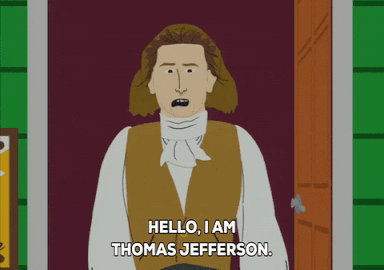

<!DOCTYPE html>
<html></html>
    <head>
        <meta charset="utf-8">
        <meta name="viewport" content="width=device-width, initial-scale=1">
        <title>extra credit pls?</title>
    </head>
    <body style="background-color:#964B00">
        <h1>Welcome To Aland's Not So Amazing Website Part 2: Electric Boogaloo</h1>

        <h2></h2>
        Yo, it's me Aland. I made a website because im bored. It's 1 am as i code this. <b>help me</b>

        <p>
           Take some text, <b>and make it bold...</b> <i><b>and slanted!</b></i>
           <br> okay well have fun looking at my website, I guess?
        </p> <br>


        <h2>The First Barbary War</h2> <br>
        <br>
        <p>
            The First Barbary War (1801-1805) was the first overseas war fought by the United States. <br>
            Thomas Jefferson was in office at the time. Also known as the Barbary Coast War or the Tripolitan War, <br>
            it put the United States in a battle against pirates from nations collectively referred to as <br>
            the Barbary States. The nations of such of that took part were Morocco, Algiers, Tunis and Tripoli. <br>
            The United States ended up winning, along with peace treaties following between the three <br>
            Barbary States and Morocco.  <br>
            <br>

            <h2>
                HOW <i>The First Barbary War</i> CONTRIBUTUES TO FREEDOM
            </h2> <br>
            Upon the United States' victory in the Egyptian city of Derma, the American flag was raised. This <br>
            was the first time that the United States had done so with a victory on foreign grounds. This can <br>
            show how willing the nation is to fight for their values and causes such as freedom. <br> 
            <br>
            <br>
            ---------------------------------------------------------------------------------------------------
            <h2>
                Judicial Review 
            </h2> <br>
            Judicial review is the idea that the actions of the executive and legislative branches of government are <br>
            subject to review based on their relation to the constitution and if it is constitutional or not, thus <br>
            leaving room for judgement and potential invalidation <br>
            <br>
            This principle of judicial review was established in 1803 during the Marbury v. Madison case in which <br>
            James Madison denied delivery of documents and commissions. Marbury, joined by three other similarly situated <br>
            appointees, petitioned for a writ of mandamus regarding the delivery of the commissions. <br>
            <br>
            The Court did state that Madison’s refusal to deliver the commission was illegal, but did not make Madison deliver <br>
            Marbury’s commission through writ of mandamus. Instead, the Court decided held that the provision of the <br>
            Judiciary Act of 1789 giving Marbury the right to bring his claim to the Supreme Court was unconstitutional, <br>
            since it allegedly extended the Court’s terms of which Article III, Section 2, established. <br>
            John Marshall (hmm...) explained that a writ of mandamus was the best way to find a solution, <br>
            but concluded the Court simply can't execute it. Marshall tried to reason that the Judiciary Act of 1789 <br>
            was not constitutional. Congress did not rights to modify the Constitution through regular <br>
            legislation as the Supremacy Clause puts the Constitution as a higher priority than any laws. <br>
            Due to this, John Marshall (him again!) established the principle of judicial review, which is the <br>
            power to determine a law as unconstitutional. <br>
            
            <h2>
                HOW <i>John Marshall's Judicial Review</i>  CONTRIBUTUES TO FREEDOM
            </h2> <br>
            The power to declare laws unconstitutional allows for unfair laws to be filtered through quality and <br>
            allow the nation be as best as it can be so that it can stick to it's values

        </p>
        <br>
        <br>
        <h2>
            Click on Thomas Jefferson to progress <br>
        </h2>
     
        <a href="more2.html"></a><br /><a target='_blank' href='more2.html'>eh</a><br />
    </body>
</html>


